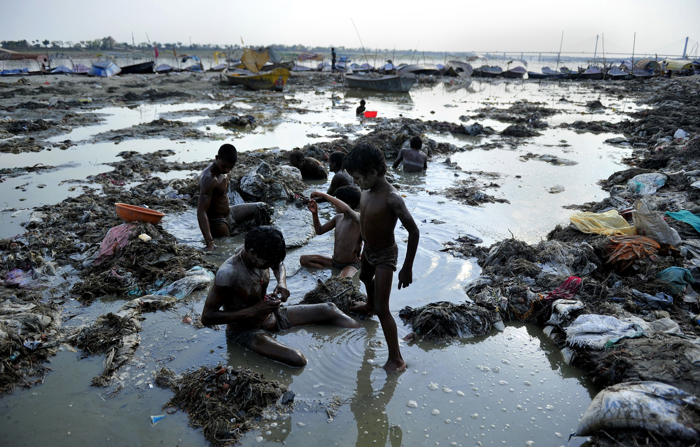

A água é essencial para a vida das pessoas e da natureza, mas os sistemas de água doce do planeta estão em declínio. As populações de espécies que vivem em água doce diminuíram em média 83% desde 1970. Além disso, perdemos 64% das terras úmidas desde 1900 e apenas 37% dos rios mais longos ainda fluem livremente e sem obstruções.

"Quase 60% da água potável no Maranhão é desperdiçada". O estado do Maranhão está se afastando da meta nacional de universalização do abastecimento de água para sua população, conforme estipulado pelo Marco Legal do Saneamento. Isso resulta em investimentos maiores em infraestrutura para levar água às pessoas, como a construção de equipamentos desnecessários se houvesse uma gestão adequada das perdas. Além disso, há um aumento no consumo de energia, produtos químicos e esforço de trabalho para produzir água que não chega às pessoas.
Em 2019, O Sistema Nacional de Informações sobre Saneamento (SNIS) apontou cerca de 39,2% da água potável do Brasil foi desperdiçada. O que para grau de comparação, com esta quantidade de água perdida seria suficiente para abastecer mais de 63 milhões de brasileiros em um ano.
A
poluição da água é um grande problema ambiental na Índia. A maior fonte de poluição da água na Índia é o esgoto não tratado. Outras fontes de poluição incluem escoamento agrícola e indústria de pequena escala não regulamentada. A maioria dos rios, lagos e águas superficiais na Índia estão poluídos devido a indústrias, esgoto não tratado e resíduos sólidos. Para estabelecer intervenções eficazes para melhorar a qualidade da água, os tomadores de decisão precisam de dados confiáveis, representativos e abrangentes. É estimado que cerca de 70% das águas superficiais na Índia são impróprias para consumo.
Todos os dias, quase 40 milhões de litros de águas residuais entram em rios e outros corpos d’água com apenas uma pequena fração adequadamente tratada. A falta de água potável tem um impacto significativo na saúde e na economia da Índia. O custo da degradação ambiental na Índia é estimado em INR 3,75 trilhões (US$ 80 bilhões) por ano. Os custos de saúde relacionados à poluição da água são estimados em cerca de INR 470-610 bilhões (US$ 6,7-8,7 bilhões por ano) – a maioria associada à mortalidade e morbidade diarreica de crianças menores de cinco anos e outras morbidades populacionais. Além do custo econômico, a falta de água, saneamento e higiene resulta na perda de 400.000 vidas por ano na Índia.
Líderes globais se reuniram em Nova Iorque entre 22 e 24 de março para a Conferência da ONU sobre a Água, também conhecida como Conferência de 2023 para Revisão Integral de Meio Termo da Implementação da Década das Nações Unidas para Ação sobre Água e Saneamento (2018-2028).


O que causa o desperdício de água?
Estes são apenas alguns exemplos de como a água utilizada de modo imprudente todos os dias.
"Como evitar o desperdício de água? Para evitar o desperdício de água, é importante lembrar que a água doce utilizada para consumo humano é um recurso limitado, representando apenas 2% de toda a água na Terra, sendo que quase 70% está congelado ou represado nas geleiras. Portanto, é necessário usar esse recurso natural de forma sustentável. Existem várias ações que podem ser tomadas para reduzir ou prevenir o desperdício de água, tais como:
Você tem toda a água que precisa.

Mas os seus filhos terão a mesma sorte?
ÁGUA É VIDA
Este projeto foi escrito para fins didáticos, PORTANTO, este projeto não tem razão nenhuma para ser comercializado. Esse projeto está livre de qualquer patente. Projeto criado na escola de São Jerônimo da Serra, "José Ferreira de Mello". Originalmente escrito e programado com a ferramenta Visual Studio Code.